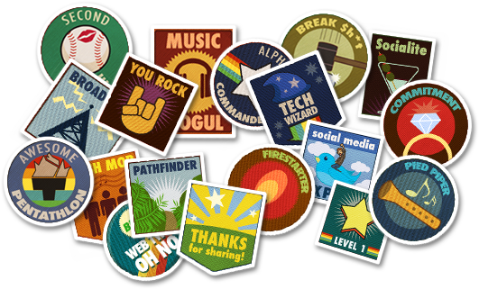
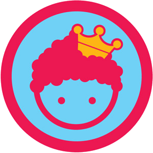
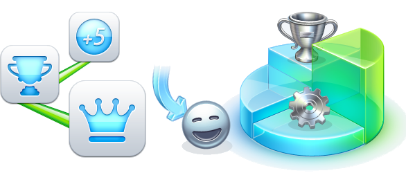
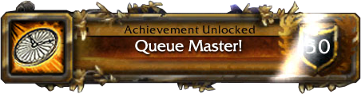
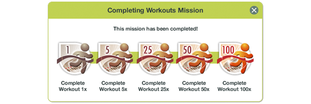
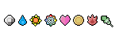
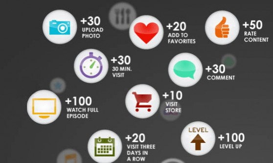

Gamificación
Juegos de Empresa

Pavel Espitia
Desarrollador de Software
Lider Técnico
Gamifi.. qué?
(gamification en el ámbito anglosajón)
es el empleo de mecánicas de juego en entornos y
aplicaciones no lúdicas con el fin de potenciar la
motivación, la concentración, el esfuerzo, la fidelización
y otros valores positivos comunes a todos los juegos.
Se trata de una poderosa estrategia para influir y motivar a grupos de personas.
Pasando de la conectividad al engagement
logrando que los miembros de una comunidad,
los trabajadores de una empresa, los estudiantes
de un instituto, los habitantes de una ciudad
-prácticamente cualquier colectivo o individuo-
participen de manera dinámica y proactiva en
acciones que generalmente requieren un esfuerzo
de la voluntad.

¿Con qué fin ? ¿ Qué ventajas tenemos ?
-
Compromiso
-
Influencia
-
Lealtad
-
Contenido generado por el usuario (UGC)
-
Inversión de tiempo
-
Viralidad
Lo que la gamificación no es:
- un nuevo concepto, mientras que el término es nuevo el concepto tiene mucho tiempo, no es un "hype" o una moda, mucho menos una tecnología.
- la gamificación no mejorará el rendimiento o la adopción de nuestro producto/sitio si el producto es simplemente malo.
- no es solo colocar insignias (badges) en nuestro sitio web, inclusive siendo importantes no son la única cosa que necesitamos
Entonces... en resumen:
La gamificación quiere hacer cualquier actividad más atractiva y emocionante, mediante
el desarrollo de comportamientos deseados. Esta técnica puede animar a la gente
para realizar tareas que consideran aburridas como completar encuestas, ir de compras
o la lectura de páginas web.

Mecánicas de juego
(solo para nombrar algunas)
Logros
Algunas personas se sienten motivadas por la necesidad de un logro,
de completar alguna tarea compleja a través de una serie de esfuerzos repetidos y prolongados,
para marcarse metas y alcanzarlas.
Aquellos motivados por los logros tienden a buscar retos y establecerse metas de dificultad
considerable (pero alcanzable). Su recompensa más gratificante es el reconocimiento de sus logros.

Estatus
La mayoría de las personas sienten la necesidad inherente de obtener un estatus,
reconocimiento, posiciónamiento, fama, prestigio, atención y finalmente, la estima y respeto de los otros.
A su vez, las personas precisan sentirse comprometidas con actividades que les proporcionen la mencionada
estima o reconocimiento. Todos los elementos de la mecánica de juego conducen a esta dinámica.
Competición
A menudo, la competición es por sí misma un elemento motivador para los individuos.
Está demostrado que pueden obtenerse mayores niveles de rendimiento cuando se establece un ambiente
competitivo en el que el ganador será recompensado. Este hecho se explica porque se gana un cierto
grado de satisfacción mediante la comparación del propio rendimiento con el de los otros.
Altruismo
La consecución de objetivos por el bien común, por una mejora social o un hecho
noble de forma desinteresada presenta un gran atractivo para muchas personas. Según el sistema ético
de distintas culturas, los únicos actos moralmente correctos son aquellos que intentan promover la
felicidad de otros. El alcance de esa moralidad conecta con la dinámica de estatus y con la de auto-expresión.
Misiones o Retos
Los retos y misiones que plantea un juego intentan hacer sentir al usuario que el juego tiene una finalidad, una meta.
Para conseguir el sentimiento épico de que se está actuando por lograr un objetivo el juego propone las misiones y retos al usuario.
Un juego está compuesto de una suma de misiones o retos a través de los cuales se van adquiriendo habilidades, se va progresando
en la curva de aprendizaje y adaptación y se van realizando acciones y desarrollando capacidades inherentes al objetivo final del juego.

Premios
Los retos y misiones que plantea un juego intentan hacer sentir al usuario que el juego tiene una finalidad, una meta.
Esa finalidad viene representada por los premios, que son la recompensa tangible (bien física o virtualmente)
a la consecución de un objetivo mediante una acción o serie de acciones. Los premios pueden clasificarse en trofeos,
medallas o logros que suelen ser visibles para otros usuarios con el fin de obtener reconocimiento
y alimentar la motivación del resto de jugadores.

Niveles
Los niveles son unos indicadores que aportan reconocimiento y respeto una vez se han cumplido unos hitos determinados.
A menudo se definen como objetivos o umbrales que al ser cumplidos, permiten subir de nivel basándose en la participación,
subir de status, o acceder a nuevo contenido de la aplicación. Los niveles son unas de las motivaciones mas fuertes para los jugadores.
Puntos
Los puntos son un gran atractivo para todo el mundo: tanto ganarlos como conservarlos,
y es eso precisamente lo que consigue que aumente la motivación ante ellos.
La puntuación puede ser utilizada para recompensar a los usuarios por sus diferentes
comportamientos u objetivos conseguidos en una aplicación.

2011
En enero de 2011 se celebró la primera cumbre sobre “gamification”.
Se invirtieron 25 millones de dólares en “gamification”.
A futuro !
Futuro
El 50% de las organizaciones que trabajan con procesos de innovación aplicarán la
“gamification” a estos procesos en 2015.
El 70% de 2.000 grandes empresas globales tendrán al menos una aplicación de “gamification”
en 2014.
Un total de 2.800 millones de dólares se invertirán directamente en “gamification”
en el año 2015.
¡ Gracias !
@pavelEspitia
http://Avanet.org
Presentación hecha usando Impress.JS
Use a spacebar or arrow keys to navigate